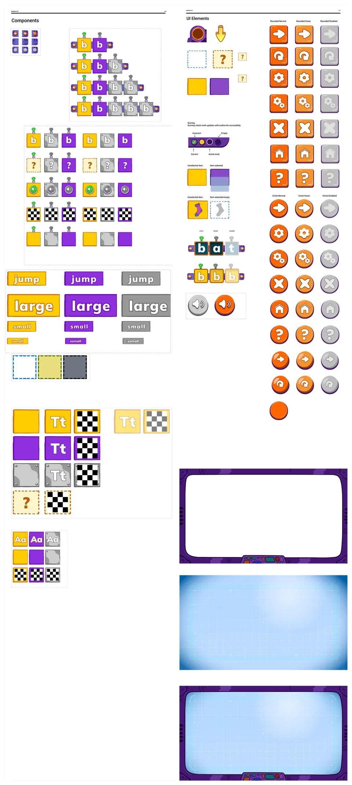

Helping little readers find their way.
Making foundational literacy more intuitive, accessible, and fun for K–2 learners.

The challenge: keeping young readers engaged
WORD Force 2.0 is a 15-game mobile literacy suite for K–2 learners. The original experience launched in 2020, but engagement dropped steeply after the first few games. Feedback and testing showed that younger children struggled with navigation and game interactions.
For version 2.0, our goal was to make the experience easier to understand and more engaging, while introducing literacy interventions and tutorial videos to support struggling readers.
My role: connecting research and product design
I led the end-to-end UX/UI redesign: remapping learning flows, simplifying interactions, refining interfaces, and directing usability testing. I collaborated with project management, UX research, product leads, visual designers, learning experience design, and development.
The 2022 project brought together six months of collaborative work. My tools included Figma, Trymata, and Dovetail.
Research designed for children
Most testing platforms require adult participants, so we adapted our approach. We recruited guardians of children ages 4–7 through Trymata for unmoderated sessions with screen and audio recordings.
I conducted 120+ unmoderated usability and A/B tests across eight testing rounds per game. I documented where children stayed engaged, where they struggled, and which patterns appeared across participants, then translated those findings into research summaries and design changes. Comparisons between versions 1.0 and 2.0 helped validate the updated iconography and interactions.
Turning findings into design changes
A clearer path through the learning
I remapped the overall game flow to connect lessons, mini-games, and interventions. The challenge was deciding where learning support belonged so it helped children without disrupting the experience.
Simpler interactions for younger learners
Feedback from the original version and observations from testing showed that navigation and interactions were difficult for younger children. We simplified those interactions and refined the interfaces to make controls more intuitive, age-appropriate, and consistent across games.
Shared components across 15 games
The design team expanded the component library with streamlined assets and standardized colors, sizing, icons, and typography. This gave the games a more coherent visual language and a reusable foundation for future updates.

Launch and outcomes
WORD Force 2.0 launched after six months of collaboration. Usability tests achieved a 90%+ task completion rate, with the updated iconography and interactions outperforming the original layouts.
The redesign paired clearer navigation and more consistent controls with literacy interventions and tutorial videos to support struggling readers.
Key Takeaways
Age-appropriate interaction design requires more than simplified visuals. Across ages 4–7, differences in reading ability and motor control called for deliberate choices about navigation, button size, and animation pacing.
Repeated testing made those differences visible and gave the team a basis for prioritizing changes. Pairing research with shared components helped translate findings into consistent improvements across the 15-game experience.
Explore the complete process and original artifacts in the original case study ↗.
Back to selected work ↗